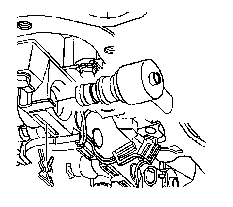
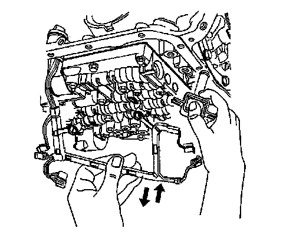
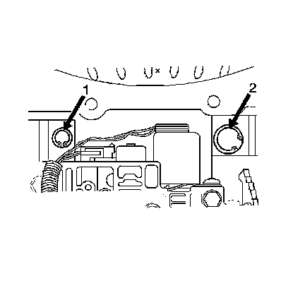

4L60-E/4L65-E/4L70-E - Automatic Transmission
Torque Converter Clutch Valve and Spring Replacement
Removal Procedure
1. Remove the transmission filter.

2. Disconnect the torque converter clutch (TCC) pulse width modulation (PWM) solenoid electrical connector.
3. Remove the TCC PWM solenoid retainer.
4. Remove the TCC PWM solenoid in order to access the TCC control solenoid bolts.

5. Disconnect the TCC control solenoid connector.
6. Remove the TCC control solenoid retaining bolts.
7. Remove the TCC control solenoid.

Caution: Valve springs can be tightly compressed. Use care when removing retainers and plugs. Personal injury could result.
8. Remove the TCC valve retainer ring (1).
9. Remove the following parts:
^ The valve bore plug
^ The TCC valve
^ The TCC valve spring(s)
Installation Procedure
Important:
^ Clean and inspect the TCC solenoid O-ring for cuts, nicks, and damage. Replace if necessary.
^ Inspect the TCC bore for sediment and debris. Flush the bore if necessary.
^ Clean and inspect the TCC valve for binding, scoring, and damage.
^ Inspect the TCC spring for cracks and deformed or broken coils.
Install the following parts:
^ The TCC valve spring
^ The TCC valve
^ The valve bore plug
1. Install the TCC valve retainer ring (1).
2. Install the TCC control solenoid.
3. Install the TCC control solenoid retaining bolts.
Tighten the bolts to 8-14 N.m (71-124 lb in).
4. Connect the TCC control solenoid connector.
5. Install the TCC PWM solenoid.
6. Install the TCC PWM solenoid retainer.
7. Connect the TCC PWM Solenoid electrical connector.
8. Install the transmission filter.